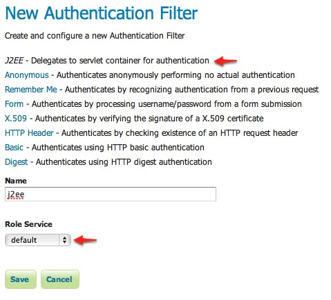
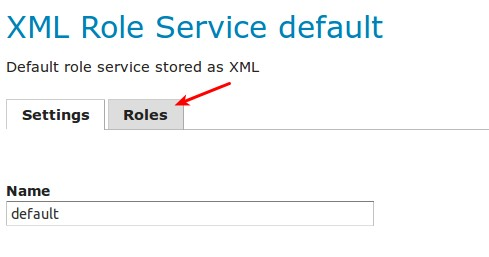
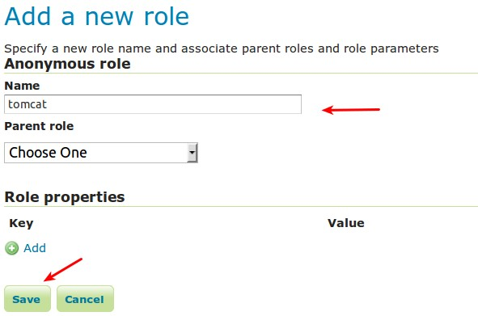
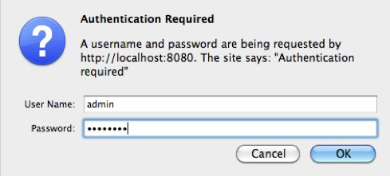

Configuring J2EE Authentication¶
Servlet containers such as Tomcat and Jetty offer their own options for authentication. Often it is desirable for an application such as GeoServer to use that existing authentication mechanisms rather than require its own authentication configuration.
J2EE authentication allows GeoServer to delegate to the servlet container for authentication. This tutorial walks through the process of setting up J2EE authentication.
Prerequisites¶
This tutorial requires a servlet container capable of doing its own authentication. This tutorial uses Tomcat.
Deploy GeoServer in tomcat before proceeding.
Configure the J2EE authentication filter¶
In order to delegate to the container for authentication a filter must first be configured to recognize the container authentication.
Login to the GeoServer web admin interface as the admin user.
Click the Authentication link located under the Security section of the navigation sidebar.

Scroll down to the Authentication Filter panel and click the Add new link.
Create a new filter named “j2ee” and fill out the settings form as follows:
- Set the Role service to “default”
Save
Back on the authentication page scroll down to the Filter Chains panel.
Select “Web UI” from the Request type drop down.
Select the j2ee filter and position it after the anonymous filter.

Save.
Configure the role service¶
Since it is not possible to ask a J2EE container for the roles of a principal it is necessary to have all J2EE roles enlisted in a role service. The only J2EE API GeoServer can use is:
class: javax.servlet.http.HttpServletRequest
method: boolean isUserInRole(String role)
The idea is to query all roles from the role service and test each role with the “isUserInRole” method.
This tutorial assumes a user named “admin” with password “password” and a J2EE role named “tomcat”.
Click the Users, Groups, and Roles link located under the Security section of the navigation sidebar.

Click on default to work with the role service named “default”.

Click on the Roles tab.
Click on the Add new role link.

- Set the Name to “tomcat”
Save
Configure Tomcat for authentication¶
By default Tomcat does not require authentication for web applications. In this section Tomcat will be configured to secure GeoServer requiring a basic authentication login.
Shut down Tomcat.
Edit the conf/tomcat-users.xml under the Tomcat root directory and add a user named “admin”:
<user username="admin" password="password" roles="tomcat"/>
Edit the GeoServer web.xml file located at webapps/geoserver/WEB-INF/web.xml under the Tomcat root directory and add the following at the end of the file directly before the closing </web-app> element:
<security-constraint> <web-resource-collection> <url-pattern>/*</url-pattern> <http-method>GET</http-method> <http-method>POST</http-method> </web-resource-collection> <auth-constraint> <role-name>tomcat</role-name> </auth-constraint> </security-constraint> <login-config> <auth-method>BASIC</auth-method> </login-config>Save web.xml and restart Tomcat.
Note
It is necessary to add all the role names specified in the web.xml to the configured role service. This is duplicate work but there is currently no other solution.
Test J2EE login¶
Navigate to the GeoServer web admin interface. The result should be a prompt to authenticate.
Enter in the username “admin” and password “password”

The result should be the admin user logged into the GeoServer web admin.